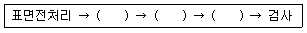
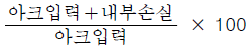
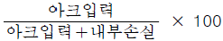
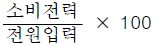
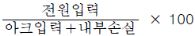
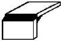
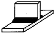
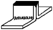

침투비파괴검사산업기사(구) (2013-09-28 기출문제)
1과목: 침투탐상시험원리
1. 다음 중 침투제의 물리적 특성 시험에서 침투제를 100℉정도의 일정한 온도를 유지시키면서 물리량을 측정하고, 그 결과를 Centistokes의 단위로 나타내는 시험 방법은?
- 비중 시험
- 점도 시험
- 염소함량 시험
- 오염도측정 시험
(정답률: 알수없음)

2. 침투탐상시험법 중에서 수도와 전원이 없는 경우에 가장 적당한 시험법은?
- 용제제거성 염색침투탐상시험
- 용제제거성 형광침투탐상시험
- 후유화성 형광침투탐상시험
- 후유화성 염색침투탐상시험
(정답률: 알수없음)
3. 침투탐상검사에서 잉여침투액의 제거 방법이 아닌 것은?
- 수세에 의한 방법
- 유화제를 사용한 후 수세에 의한 방법
- 용제제거에 의한 방법
- 유화제 사용 후 용제제거에 의한 방법
(정답률: 64%)
4. 다음은 침투시간에 대한 설명으로 틀린 것은?
- 침투액의 온도 및 시험체의 온도가 낮아지면 비교적 침투시간이 짧다.
- 침투시간을 짧게 하기 위해 침투액 적용 후 시험체를 흔들어 주어도 된다.
- 피로균열, 연마균열 등의 결함이 예상되는 시험체는 침투시간을 늘린다.
- 정확한 침투시간은 대비시험편을 사용하여 검증한 수 적용할 수 있다.
(정답률: 64%)
5. 다음 중 주조품 표면의 탕계(cold shut)의 지시로 가장 적절한 것은?
- 점 또는 매끈한 연속적인 선
- 작은 지시들의 군집
- 거칠고 깊은 지시
- 크고 부피가 큰 지시
(정답률: 알수없음)
6. 침투탐상시험에 사용되는 검사재료 중, 낮은 증기압 특성이 중요시 되는 재료는?
- 침투제
- 유화제
- 현상제
- 세척제
(정답률: 알수없음)
7. 비파괴시험의 특성에 관한 설명 중 틀린 것은?
- 초음파탐상시험에서 초음파의 진행방향에 평행한 균열은 검출하기 어렵다.
- 침투탐상시험에서 표면에 열려있지 않은 균열은 검출하기 어렵다.
- 방사선투과시험에서 방사선의 진행방향에 평행한 균열은 검출하기 어렵다.
- 자분탐상검사법은 선 모양의 결함은 검출할 수 없으나, 핀홀과 같은 점 모양이나 공 모양의 검출이 용이하다.
(정답률: 알수없음)
8. 일반적으로는 곤란하지만 특수 기법을 사용하면 시험체내에 존재하는 결함의 위치(표면에서의 깊이)를 확인할 수 있는 비파괴검사법은?
- 누설검사
- 자분탐상시험
- 침투탐상시험
- 방사선투과시험
(정답률: 82%)
9. 압연 강판에 존재하는 라미네이션의 불연속을 검출하는데 가장 효과적인 비파괴검사법은?
- 초음파탐상시험
- 자기탐상시험
- 방사선투과시험
- 침투탐상시험
(정답률: 알수없음)
10. 자분탐상시험에서 자화전류의 종류에 해당되지 않는 것은?
- 직류
- 교류
- 백천류
- 충격전류
(정답률: 알수없음)
11. 침투탐상시험의 신뢰성을 유지하기 위한 조치사항이 아닌것은?
- 사용 중인 탐상제의 점검을 정기적으로 시행한다.
- 투과도계를 이용하여 탐상결과의 신뢰성을 점검한다.
- 탐상제 구입시 기준 탐상제를 채취 보존한다.
- 자외선조사장치의 자외선강도를 정기적으로 점검한다.
(정답률: 알수없음)
12. 재료의 내부에 발생하는 결함의 동적인 거동을 평가하는 비파괴시험법은?
- 누설검사
- 음향방출시험
- 초음파탐상시험
- 와전류탐상시험
(정답률: 알수없음)
13. 비파괴시험의 목적과 유효성이라 볼 수 없는 것은?
- 사고 처리를 위하여
- 제조 원가의 절감을 위하여
- 제조 공정의 개선을 위하여
- 생산품의 신뢰성 확보를 위하여
(정답률: 알수없음)
14. 침투탐상시험법과 비교한 자분탐상시험법의 장점으로 거리가 먼 것은?
- 표면직하의 결함검출이 가능하다.
- 검사 후 탈자를 실시하지 않는 장점이 있다.
- 침투탐상보다는 정밀한 전처리가 요구되지 않는다.
- 얇은 도장 및 도금된 시험체에도 검사가 가능하다.
(정답률: 72%)
15. 시험체 표면의 열린 결함만 검출할 수 있는 비파괴검사법은?
- 침투탐상검사
- 초음파탐상검사
- 방사선투과검사
- 음향방출검사
(정답률: 90%)
16. 와전류탐상검사의 특징에 대한 설명으로 옳은 것은?
- 표면 아래 깊은 곳에 있는 결함의 검출이 우수하다.
- 검사하여 얻은 지시에서 직접적으로 결함의 종류, 형상 등을 판별하기 쉽다.
- 강자성 금속에 적용이 어려우며, 자기포화장치 또는 탈자 후 검사를 실시하여야 한다.
- 결과를 기록하여 보존할 수 없으며, 지시가 전기적 신호로 얻어지기 때문에 재생시켜 처리할 수 없다.
(정답률: 알수없음)
17. 용제제거성 염색침투탐상시험의 장점으로 옳은 것은?
- 침투탐상제 중에 검사비용이 가장 저렴하다.
- 탐상감도가 다른 침투제와 비교하여 가장 높다.
- 대형 구조물이나 기계 부품의 부분탐상에 부적합하다.
- 밝은 곳에서 실시하는 경우 전원, 수도 장치가 필요 없다.
(정답률: 60%)
18. 초음파탐상시험에 대한 설명 중 틀린 것은?
- 시험체의 내부 결함 검출에 유리하다.
- 일반적으로 대비 시험편이 필요하다.
- 결함의 크기와 형상을 언제나 실제와 똑같이 판독해 낼 수있다.
- 방사선투과시험과 비교할 때 결함의 깊이 방향의 위치를 쉽게 측정할 수 있다.
(정답률: 40%)
19. 열처리의 영향에 따른 전기전도도의 변화를 측정할 수 있는 비파괴검사법은?
- 자분탐상시험
- 음향방출시험
- 와전류탐상시험
- 초음파탐상시험
(정답률: 90%)
20. 다음 중 방사선장해 방어에 관계되는 선량당량을 나타내는 단위는?
- Gy(Gray)
- R(Roentgen)
- Sv(Sievert)
- Bq(Becquerel)
(정답률: 알수없음)
2과목: 침투탐상검사
21. 수세성 형광침투탐상검사의 장점으로 거리가 먼 것은?
- 넓은 면적을 간단한 조작으로 탐상하기 쉽다.
- 수분이 있어도 침투액의 성능에는 변화가 없다.
- 비교적 거친 시험체에 대해서도 적용이 가능하다.
- 열쇠구멍이나 나사부와 같은 복잡한 형상에도 적용이 가능하다.
(정답률: 75%)
22. 수세성 침투액을 사용하여 검사하는 과정을 다음의 5단계로 수행할 때 ( )안에 알맞은 순서로 옳은 것은?

- 현상액 적용→액체 침투액 수세→액체 침투액 적용
- 액체 침투액 수세→액체 침투액 적용→현상액 적용
- 액체 침투액 적용→현상액 적용→액체 침투액 수세
- 액체 침투액 적용→액체 침투액 수세→현상액 적용
(정답률: 알수없음)
23. 안료 등을 넣은 유성 침투액에 계면활성제도 포함되어 있는 침투액은?
- 수세성 형광 침투액
- 후유화성 형광 침투액
- 용제 제거성 염색 침투액
- 후유화성 염색 침투액
(정답률: 알수없음)
24. 다음 중 침투액에 요구되는 특성이 아닌 것은?
- 미세하게 열린 결함부에도 쉽게 침투되어야 한다.
- 점도는 비교적 낮아야 한다.
- 증발이나 건조가 빠르지 않아야 한다.
- 인화점이 낮아야 한다.
(정답률: 70%)
25. 탐상결과의 기록방법 중 검출된 결함지시모양을 가장 잘 나타낼 수 있는 방법은?
- 사진 촬영에 의한 방법
- 전사에 의한 방법
- 스케치에 의한 방법
- 필기설명에 의한 방법
(정답률: 70%)
26. 후유화성 형광침투탐상시 세척단계에서 과잉 세척을 방지할 수 있는 가장 효과적인 방법은?
- 침투제가 완전히 유화되기 전 세척한다.
- 침투제가 완전히 유화된 후 세척한다.
- 과잉 침투제가 제거되자마자 세척 작업을 중단한다.
- 110℉이상의 고온으로 세척한다.
(정답률: 알수없음)
27. 다음 중 비다공질, 비전도성재료 등의 침투탐상검사에 이용되는 방법은 어느 것인가?
- 하전입자법
- 역형광법
- 휘발성액체법
- 입자여과법
(정답률: 알수없음)
28. 터빈 날개를 검사하면서 검사자가 지시를 천으로 닦아 없앤 후 다시 현상제를 적용하였더니 작은 지시는 나타자지 않고, 큰 지시의 일부만 나타났다면 처음의 작은 지시에 대한 적절한 평가로 옳은 것은?
- 거짓 지시이다.
- 무관련 지시이다.
- 미세하고 얕은 불연속부에 의한 지시이다.
- 현상제를 잘못 하용하여 나타난 지시이다.
(정답률: 75%)
29. 침투탐상시험에서 침투제의 성능 시험방법이 아닌 것은?
- 감도 시험
- 수분 함량
- 점성 시험
- 화학적 불황성 시험
(정답률: 알수없음)
30. 다음 중 침투탐상검사에 대한 설명으로 옳은 것은?
- 금속재료에만 탐상이 가능하다.
- 콘크리트와 목재의 탐상이 용이하다.
- 합성수지 제품에서 탐상이 가능하다.
- 모든 물질에 탐상이 가능하다.
(정답률: 20%)
31. 염색침투제의 색상을 주로 적색을 사용하는 이유로서 가장 적절한 것은?
- 배경 색상에 관계없이 가시도가 비교적 높기 때문
- 배경 색상에 관계없이 명암도가 비교적 높기 때문
- 배경 색상에 관계없이 선명도가 비교적 높기 때문
- 조명의 강도에 크게 영향을 받지 않고 색상인지도가 비교적 일정하기 때문
(정답률: 34%)
32. 다음 중 침투탐상검사에서 재시험을 해야 되는 경우가 아닌것은?
- 시험의 중간 또는 종료 후에 조작방법이 잘못된 것을 알았을 때
- 시험의 기록만이 잘못 작성되었을 때
- 침투지시모양이 흠에 기인한 것인지 의사지시인지 판단이 곤란할 때
- 탐상검사시 작업자의 실수가 인정된 경우
(정답률: 알수없음)
33. 용제제거성 형광 침투액을 이용하여 항공 부품의 응력부식균열을 검출하고자할 때 권고되는 최소 침투시간은?
- 1분
- 5분
- 10분
- 120분
(정답률: 37%)
34. 다음 중 증기 세척법으로 표면에 있는 오물을 제거하기 곤란한 경우는?
- 그리스
- 중유
- 경유
- 녹
(정답률: 64%)
35. 침적법으로 적용한 시험체에 균일한 도포를 하는 것과 과잉의 침투액을 제거하여 유화처리나 세척처리의 효율을 증대시키는 처리법은 어느 것인가?
- 침투처리
- 배액처리
- 유화처리
- 제거처리
(정답률: 73%)
36. 넓은 면적의 탐상 면을 단 한번의 조작으로 시험하고자 할때 가장 좋은 방법은?
- 수세성 형광 침투탐상시험법
- 용제제거성 염색 침투탐상시험법
- 후유화성 염색 침투탐상시험법
- 후유화성 형광 침투탐상시험법
(정답률: 77%)
37. 침투탐상시험의 대비시험편에 대한 설명 중 옳은 것은?
- A형 대비시험편을 재사용하기 위한 가열온도는 530℃이다.
- 대비시험편은 탐상제의 성분 및 시험면에 검출된 결함의 크기 추정을 위해 사용된다.
- B형 대비시험편은 깊이가 일정한 도금 균열을 재현성 좋게 제작한 것으로 반복 사용에 적합하다.
- A형 대비시험편은 중앙부에 홈을 가공하지 않은 상태로만 사용해야 한다.
(정답률: 알수없음)
38. 다음 중 특수 침투탐상검사법이 아닌 것은?
- Wink Zyglo
- Stress Zyglo
- Filterde Particle penetrant Test
- Stress Particle penetrant Test
(정답률: 알수없음)
39. 침투탐상검사시 제품표면의 침투액을 대부분 기계적으로 제거하고 마무리로 세척제를 사용하여 헝겊이나 종이수건 등에 소량 묻혀서 표면의 잉여 침투액을 제거하는 과정은?
- 전처리
- 제거처리
- 현상처리
- 후처리
(정답률: 알수없음)
40. 용제제거성 염색 침투탐상검사의 관찰방법에 대한 설명 중 틀린 것은?
- 균열의 지시몽양은 일반적으로 선모양으로 나타낸다.
- 붉은색 광선 하에서 식별성이 더욱 좋아진다.
- 결함 지시는 백색의 바탕 위에 적색의 침투액 모양으로 나타난다.
- 자연광의 밝기가 기준 이하일 경우 추가로 조명을 설치해야 한다.
(정답률: 75%)
3과목: 침투탐상관련규격
41. 침투탐상 시험방법 및 침투지시모양의 분류(KS B 0816)에 따라 한다면 다음 중 맞지 않은 것은?
- 군집결함
- 독립결함
- 연속결함
- 분산결함
(정답률: 73%)
42. 보일러 및 압력용기에 대한 표준침투탐상검사(ASME Sec. Ⅴ Atr.24 SE-165)에 따라 형광침투탐상법을 적용하고자할 때 자외선등은 사용하기 전 충분한 예열이 필요하다. 최소 예열시간은?
- 1분
- 5분
- 10분
- 20분
(정답률: 알수없음)
43. 항공 우주용 기기의 침투탐상 검사방법(KS W 0914)에 따라 사용하는 침투 탐상제의 설명으로 틀린 것은?
- 침투액계의 타입은 Ⅰ(형광), Ⅱ(염색), Ⅲ(염색 및 형광 복식) 3타입으로 나눈다.
- 침투액계의 방법은 A(수세성), B(후유화성-친유성), C(용제제거성), D(후유화성-친수성)
- 현상제의 감도 레벨은 1(저감도), 2(중감도), 3(고감도), 4(초고감도) 4레벨로 나눈다.
- 용제성 제거제의 클래스는 (1)-할로겐화, (2)-비할로겐화, (3)-특정용도 3클래스로 나눈다.
(정답률: 20%)
44. 침투탐상 시험방법 및 침투지시모양의 분류(KS B 0816)에 따른 적용할 시험방법의 선정시 고려하여야 할 사항으로 틀린 것은?
- 시험품의 용도와 표면거칠기
- 예상결함 종류와 크기
- 탐상제의 성질
- 시험품의 밀도
(정답률: 60%)
45. 보일러 및 압력용기에 대한 침투탐상검사(ASME Sec.Ⅴ Atr.6)에서 규정한 재질-형태에 따른 최소 침투시간으로 옳은 것은?
- 알루미늄 주조품 : 침투시간 5분
- 마그네슘 단조품 : 침투시간 5분
- 티타늄 봉 : 침투시간 7분
- 강 용접품 : 침투시간 10분
(정답률: 알수없음)
46. 침투탐상 시험방법 및 침투지시모양의 분류(KS B 0816)의 대비시험편의 사용방법에 대하여 바르게 설명한 것은?
- 조작의 적합여부를 조사하기 위한 시험은 1조의 대비시험편에 다른 탐상제를 같은 조건에서 적용하여 시험을 하여 침투지시모양을 비교한다.
- 탐상제의 성능시험은 1조의 대비시험편의 가각의 면에 동일 탐상제를 각각 적용하여 다른 조건에서 시험하여 얻어진 침투지시모양을 비교한다.
- A형 시험편은 보편적으로 홈을 사이에 둔 양쪽면을 1조로 하여 사용하는데, 홈부분을 절단하여 사용하면 안된다.
- B형 대비시험편은 원칙적으로 갈라짐에 대하여 직각방향으로 1/2로 절단한 2편을 1조로 하여 사용한다.
(정답률: 알수없음)
47. 보일러 및 압력용기에 대한 침투탐상검사(ASME Sec.Ⅴ Atr.6)에서 검사 보고서에 포함해야 될 내용이 아닌 것은?
- 절차서 식별번호 및 개정 번호
- 지시의 기록 혹은 도면
- 검사 수행 일자 및 시간
- 검사품의 제조일자 및 업체
(정답률: 67%)
48. 침투탐상 시험방법 및 침투지시모양의 분류(KS B 0816)에 따른 탐상시험에서 여러 개의 지시모양이 거의 동일 직선상에 존재하고 그 상호거리가 얼마 이하일 경우 연속침투지시모양이라 하는가?
- 2㎜
- 4㎜
- 5㎜
- 10㎜
(정답률: 알수없음)
49. 보일러 및 압력용기에 대한 침투탐상검사(ASME Sec.Ⅴ Atr.6)에서 과인의 수세성 침투액은 물분무로 제거한다. 이 때의 수압과 수온의 최대치는 얼마인가?
- 수압 : 304kPa, 수온 : 43℃
- 수압 : 354kPa, 수온 : 43℃
- 수압 : 404kPa, 수온 : 43℃
- 수압 : 504kPa, 수온 : 43℃
(정답률: 46%)
50. 보일러 및 압력용기에 대한 표준침투탐상검사(ASME Sec. Ⅴ Atr.24 SE-165)에서 검사체 표면이 고온(38℃초과)을 유지하는 부품을 수행하는 방법으로 적합한 것은?
- 제조자 권고 사항을 따라 수행한다.
- 최소 크기의 불연속을 포함하는 시험편을 제작하여 수행한다.
- 사용하고자 하는 온도에서 절차를 검증하고 계약 당사자와 합의 후 수행한다.
- 고온과 관련한 사항은 별도의 규정이 없으므로 일반적인 탐상방법으로 수행한다.
(정답률: 알수없음)
51. 침투탐상 시험방법 및 침투지시모양의 분류(KS B 0816)에 따른 형광 침투액 사용시 암실의 조도는 몇 lx(룩스) 이하로 하는가?
- 20 lx
- 25 lx
- 30 lx
- 50 lx
(정답률: 알수없음)
52. 항공 우주용 기기의 침투탐상 검사방법(KS W 0914)에 따른 검사시 수세 후 건조에 관한 사항으로 틀린 것은?
- 건식 현상제를 적용할 때는 적용 전에 건조한다.
- 수용성 현상제를 적용할 때는 적용 전에 건조하면 좋고, 적용 후에는 반드시 건조시킨다.
- 현상제를 사용하지 않는 경우에는, 검사 후 건조한다.
- 수현탁성 현상제를 적용할 때는 적용 후에 건조한다.
(정답률: 알수없음)
53. 침투탐상 시험방법 및 침투지시모양의 분류(KS B 0816)에서 기호 VB-S는 무엇을 뜻하는가?
- 후유화성 염색 침투액을 사용하고 속건식 현상제를 사용하는 것을 뜻한다.
- 후유화성 형광 침투액을 사용하고 속건식 현상제를 사용하는 것을 뜻한다.
- 후유화성 형광 침투액을 사용하고 습식 현상제를 사용하는 것을 뜻한다.
- 후유화성 염색 침투액을 사용하고 습식 현상제를 사용하는 것을 뜻한다.
(정답률: 알수없음)
54. 보일러 및 압력용기에 대한 표준침투탐상검사(ASME Sec. Ⅴ Atr.24 SE-165)에서 자외선등의 강도를 주기적으로 점검하도록 규정하고 있다 최대 점검 주기는?
- 매일
- 3일
- 5일
- 1주일
(정답률: 50%)
55. 보일러 및 압력용기에 대한 표준침투탐상검사(ASME Sec. Ⅴ Atr.24 SE-165)에 의한 전처리 과정에서 녹이나 무기물을 제거하기에 가장 적합한 세척법은?
- 증기세척
- 초음파세척
- 세제세척
- 유기용제세척
(정답률: 30%)
56. 침투탐상 시험방법 및 침투지시모양의 분류(KS B 0816)에서 대비시험편을 사용하는 목적으로 가장 올바른 표현은?
- 결함검출 능력 및 침투지시 모양의 조사
- 탐상제의 성능 및 조작 방법의 적합 여부 조사
- 침투지시모양 비교 및 시험순서의 적합 여부 조사
- 탐상제의 품질 및 시험절차의 적합 여부 조사
(정답률: 70%)
57. 침투탐상 시험방법 및 침투지시모양의 분류(KS B 0816)에 의거 침투탐상시험 결과 거의 동일 직선상에 두 개의 선모양 흠이 각각 3㎜와 1.5㎜가 확인되었다. 흠의 거리가 3㎜로 측정되었다면 다음 중 옳은 것은?
- 연속된 하나의 흠지시로 간주한다.
- 독립된 두 개의 흠지시로 간주한다.
- 분산된 흠으로 4급으로 분류해야만 한다.
- 원모양 흠으로 분류해야만 한다.
(정답률: 55%)
58. ASME SEC. Ⅷ App. 8(2010)에 따라 압력용기의 강용접부를 침투탐상 하였을 때 합격이 될 수 있는 것은?
- 2㎜의 선형 침투지시
- 5㎜를 초과하는 원형 침투지시
- 1.5㎜간격으로 1.6㎜의 침투지시 4개가 일직선으로 있을 때
- 나비가 2㎜이고 길이가 4㎜인 침투지시
(정답률: 알수없음)
59. 보일러 및 압력용기에 대한 표준침투탐상검사(ASME Sec. Ⅴ Atr.24 SE-165)에 따른 수세성 침투탐상에서 잉여 침투액을 제거할 때에 수압과 수온으로 올바른 것은?
- 180kPa 이하, 5~25℃
- 280kPa 이하, 10~38℃
- 350kPa 이하, 10~50℃
- 450kPa 이하, 5~75℃
(정답률: 알수없음)
60. 침투탐상 시험방법 및 침투지시모양의 분류(KS B 0816)에 따라 독립침투지시모양으로 분류되지 않는 것은?
- 갈라짐에 의한 침투지시모양
- 선상 침투지시모양
- 원형상 침투지시모양
- 분산 침투지시모양
(정답률: 알수없음)
4과목: 금속재료 및 용접일반
61. 수소저장합금에 대한 설명으로 틀린 것은?
- 수소저장합금은 수소가스와 반응하여 금속수소화물로 된다.
- 수소가스를 액화시키는 데에는 10~14kWh/kg의 전력량과 -253℃의 저온 저장용기가 필요하다.
- 금속수소화물은 단위부피(1cm3)중에 1022 개의 수소원자를 포함한다.
- 수소저장합금은 수소를 흡장할 때에는 수축하고, 방출 할 때에는 팽창한다.
(정답률: 60%)
62. 탈산 및 기타 가스 처리가 불충분한 상태의 용강을 그대로 주입하여 응고된 것으로 내부에 기포가 많이 존재하는 강은?
- 킬드강
- 캡드강
- 림드강
- 세미킬드강
(정답률: 알수없음)
63. 7xxx계 단련용 알루미늄 합금은 알루미늄에 어떤 주요 합금 원소를 첨가한 것인가?
- Cu
- Mn
- Si
- Zn
(정답률: 알수없음)
64. 금속원자 상호간에 고용체를 만들 때 용질원자가 용매원자에 고용되는 정도를 결정짓는 요소를 설명한 것 중 옳은 것은?
- 원자의 크기가 20%이상 다른 경우에 일어난다.
- 두 원자종의 금속이 다른 결정구조에서 일어난다.
- 동일조건에서 높은 원자가를 갖는 금속에서 잘 일어난다.
- 두 원소간의 전기음성도차가 크면 치환형 고용체가 형성하기 쉽다.
(정답률: 알수없음)
65. 열처리의 종류 중 인성을 부여할 목적으로 하는 열처리 방법은?
- 뜨임
- 불림
- 풀림
- 담금질
(정답률: 알수없음)
66. 철강 조직의 용어가 틀리게 연결된 것은?
- Fe3C - 시멘타이트
- α고용체 - 페라이트
- γ고용체 - 오스테나이트
- α고용체 + Fe3C - 레데뷰라이트
(정답률: 알수없음)
67. 탄소강 중 인(P)의 영향을 설명한 것 중 옳은 것은?
- 적열취성의 원인이 된다.
- 고스트라인을 형성한다.
- 결정립을 미세화시킨다.
- 강도, 경도, 탄성한도 등을 높인다.
(정답률: 알수없음)
68. 재결정 온도 이상에서 가공하는 것은?
- 냉간가공
- 저온가공
- 열간가공
- 상온가공
(정답률: 82%)
69. 다음 중 안경테 또는 의료용(치열교정용) 등에 주로 사용되는 것은?
- 고탄소강
- 초탄성합금
- 탄소공구강
- 저탄소합금강
(정답률: 알수없음)
70. 황동의 조직에 대한 설명으로 틀린 것은?
- α상은 면심입방격자를 갖는다.
- α상은 Zn에 Cu가 고용된 상이다.
- β상은 체심입방격자를 갖는다.
- 평형상태도에서 6계의 상을 갖는다.
(정답률: 50%)
71. 교류 용접기의 역률(%) 계산식으로 가장 적합한 것은?




(정답률: 40%)
72. 강재의 표면의 흠이나 개재물, 탈탄층 등을 제거하기 위하여 될 수 있는 대로 얇게 그리고 타원형 모양으로 표면을 깎아내는 가공법은?
- 스카핑(scarfing)
- 가스 가우징(gas gauging)
- 스택 절단(stack cutting)
- 분말 절단(powder cutting)
(정답률: 59%)
73. 고장력강의 열영향부의 저온균열에 영향을 주는 3대 요인은?
- 용접부의 조직, 수소량, 탄소량
- 용접부의 수소량, 산소량, 구속상태
- 용접부의 조직, 산소량, 구속상태
- 용접부의 조직, 수소량, 구속상태
(정답률: 50%)
74. 용접 결함에 있어 수소가 존재하는 경우만 생기는 취성화 현상과 관계가 있는 것은?
- 은점(fish eye)
- 선상조직(ice flower structure)
- 미크로 피셔(micro-fissure)
- 루트 트랙(root crack)
(정답률: 알수없음)
75. 전기 용접법의 일종으로 아크열이 아닌 와이어와 중간생성물 사이에 흐르는 전류의 저항열(Joule heat)을 이용하는 것은?
- 스터드 용접법
- 테르밋 용접법
- 일렉트로 슬래그 용접법
- 원자수소 용접법
(정답률: 알수없음)
76. 주로 봉모양의 두 재료를 전극 클램프로 잡고 접합면에 가압 통전후 적당한 온도에 도달했을 때 높은 압력을 가해 용접하는 방법은?
- 퍼커션 용접(percussion welding)
- 냉간 압접(cold welding)
- 업셋 용접(upset welding)
- 플래쉬 용접(flash welding)
(정답률: 55%)
77. 내용적 46ℓ인 산소용기에서 용기에 부착된 고압계가 120kgf/cm2로 나타냈다. 시간당 산소 소모량을 60ℓ로 용접할 경우 몇 시간 사용할 수 있는가?
- 55.2시간
- 72시간
- 92시간
- 102시간
(정답률: 50%)
78. 산소 절단법(수동)에 대한 설명 중 틀린 것은?
- 팁끝과 강판사이의 거리는 백심의 끝에서 약 1.5~2.0㎜정도 유지한다.
- 절단부의 예열온도는 약 200~300℃정도로 한다.
- 토치의 진행속도가 너무 느리면 절단면 윗 모서리가 둥글게 된다.
- 토치의 진행속도가 너무 빠르면 절단이 중단된다.
(정답률: 46%)
79. 아크 용접 중에 아크가 전류 자장의 영향을 받아 용접아크가 한쪽 방향으로 쏠리는 현상을 의미하는 용어는?
- 용융속도(melting speed)
- 아크 블로우(arc blow)
- 아크 부스터(arc booster)
- 전압강하(cathode drop)
(정답률: 77%)
80. 다음 이음형태 중 가장자리(변두리) 용접을 도시하는 것은?



(정답률: 40%)